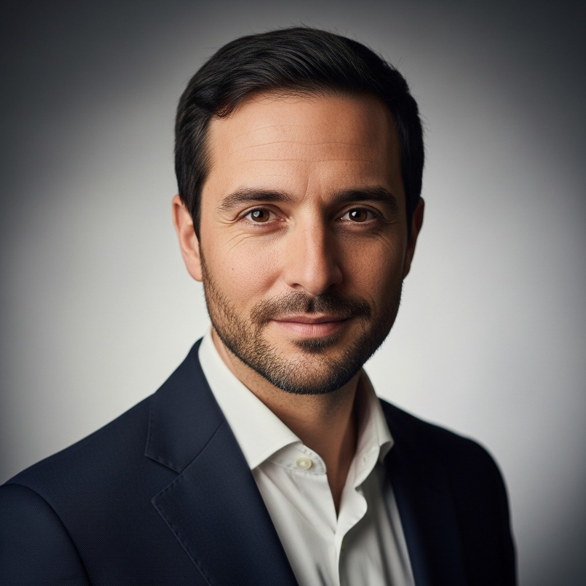
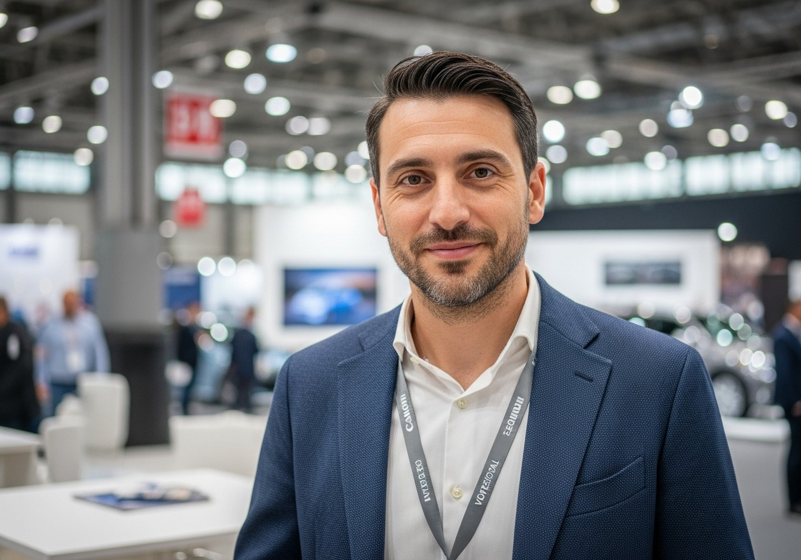
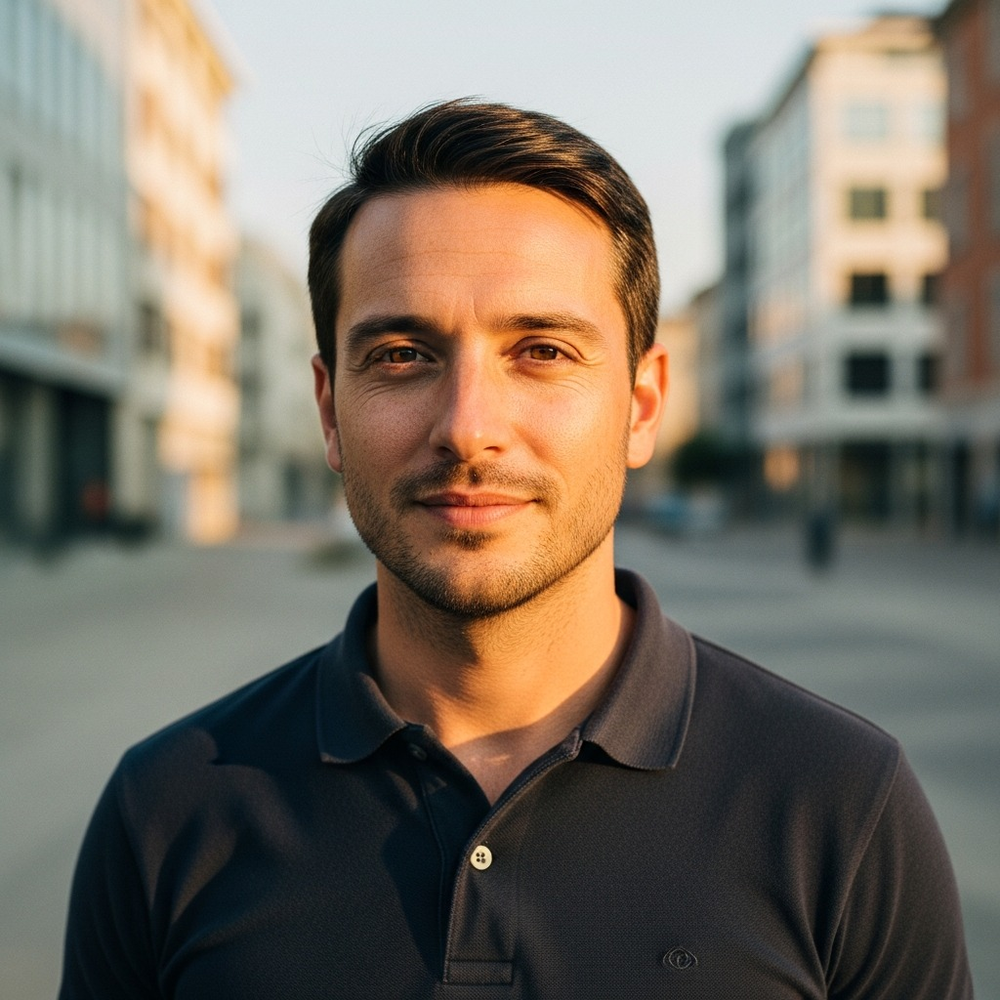
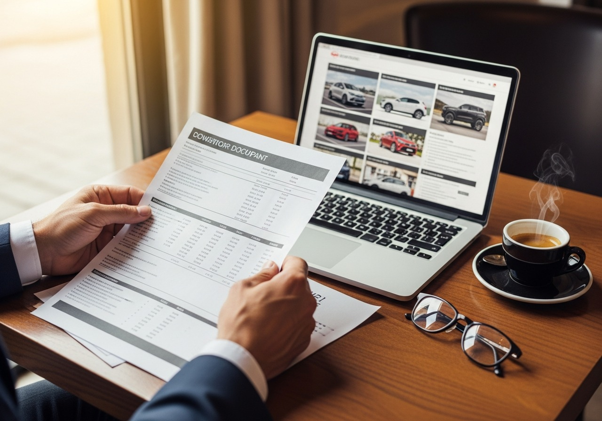
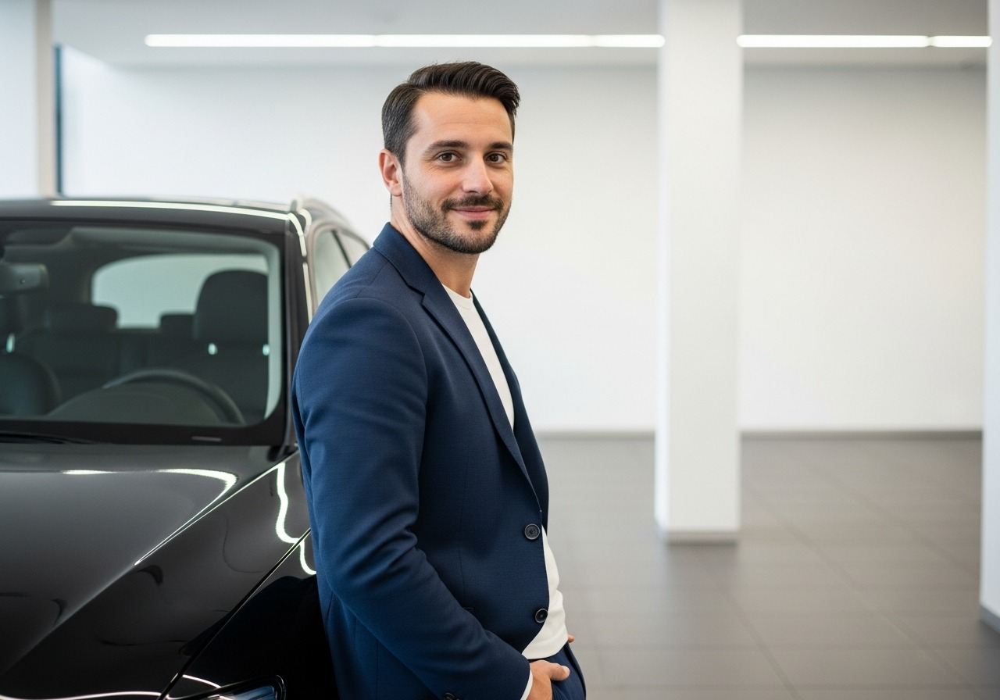

Trovo auto premium nei mercati tedeschi, olandesi e belgi per concessionari italiani. Ogni auto che ti propongo e' gia' verificata — prezzo, km, anno, storia. Paghi solo quando l'auto e' consegnata.



Mi specializzo nello scouting auto premium dai mercati europei per concessionari italiani. ARGOS nasce dall'analisi sistematica di migliaia di inserzioni EU: il protocollo monitora 73 portali in 19 paesi con quattro verifiche indipendenti per ogni veicolo. Al concessionario arrivano solo le auto che superano tutti e quattro i controlli — con i numeri completi prima che venga speso un euro.
Lavoro PER il concessionario, non al posto del concessionario. Alcuni servizi online prendono il cliente finale: io porto l'auto a te, il cliente resta tuo, il margine resta tuo. Pago io tutti i costi di ricerca e verifica — tu paghi €800-1.200 solo quando l'auto e' nel tuo piazzale.
La Germania ha cinque volte piu' auto usate premium rispetto all'Italia. Le aziende tedesche comprano nuove ogni tre anni, le rimettono in mercato con chilometraggi bassi e libretto completo. Il TUV — il controllo tecnico tedesco — e' piu' rigoroso del nostro. Il risultato: un BMW X3 2022 con 45.000 km si trova a Monaco a €33.000. Lo stesso esemplare in Italia parte da €38.500. Non e' un segreto — e' strutturale.
Non propongo tutto quello che trovo. Su ogni auto faccio quattro controlli separati: prezzo di mercato reale, coerenza dei chilometri dichiarati, corrispondenza anno e allestimento, e verifica delle anomalie di storico. Se qualcosa non torna, passo oltre. Al concessionario arrivo con le auto che hanno superato tutti e quattro i controlli — e con i numeri completi.
La mia fee e' compresa tra €800 e €1.200 per operazione, e la paghi solo quando l'auto e' consegnata. Se non trovo nulla di adatto, non paghi nulla. Lavoro a successo perche' e' l'unico modello che ha senso: guadagno quando tu guadagni.
Lavoro con pochi dealer selezionati — al massimo due o tre per provincia. Questo mi permette di conoscere davvero il tuo stock, quello che cerchi, e quello che puoi vendere nella tua zona.
Non propongo tutto quello che trovo. Prima che tu veda un'auto, ha gia' superato quattro controlli separati.
In Germania le auto premium costano strutturalmente meno. Cinque volte piu' offerta, auto aziendali che rientrano ogni tre anni, fiscalita' che favorisce il ricambio rapido. Non e' una questione di fortuna — e' il funzionamento normale del mercato tedesco. Questo differenziale esiste da anni, ed e' persistente.
Monitoro anche Olanda, Belgio e Austria, che hanno caratteristiche simili: offerta alta, prezzi stabili, auto aziendali in buone condizioni. Quando serve, guardo anche Francia, Svezia e altri mercati EU.
La fee ARGOS va da €800 a €1.200 per operazione conclusa. Il margine che resta al concessionario, al netto di tutti i costi, e' di norma tra €2.000 e €4.000 per veicolo.
Un messaggio su WhatsApp e' sufficiente. Marca, modello, anno, budget massimo. Se hai un'idea chiara, meglio. Se hai dubbi, ti aiuto a definire i parametri. Non serve firmare niente, non serve incontrarsi.
meno di 10 minuti
Entro 48 ore ti invio le auto che ho trovato e verificato. Per ognuna trovi: prezzo di acquisto, stima costi di importazione, margine netto stimato, foto e dati tecnici. Decidi tu se procedere — senza pressioni e senza scadenze artificiali.
24-48 oreSe i numeri ti convincono, ti fornisco tutti i riferimenti per procedere: contatto del venditore, documenti verificati, stima costi di importazione. Se hai bisogno di supporto su trasporto o pratiche, possiamo valutarlo a parte.
Tu decidi, zero pressioniIl mercato tedesco e' il principale — ha cinque volte piu' offerta rispetto all'Italia. Ma monitoro anche Olanda, Belgio e Austria, che hanno caratteristiche simili: offerta alta, prezzi stabili, auto aziendali in buone condizioni. Quando serve, guardo anche Francia, Svezia e altri mercati EU.
I portali che monitoro regolarmente: AutoScout24.de · Mobile.de · Marktplaats.nl · AutoScout24.nl · AutoScout24.be · willhaben.at · AutoScout24.at · leboncoin.fr · Blocket.se — e altri 64 portali specializzati.
Da €800 a €1.200 per operazione. Paghi solo quando l'auto e' consegnata.

Se funziona, continuiamo. Se no, ci salutiamo — senza che tu abbia speso niente. Mandami un messaggio con quello che stai cercando.